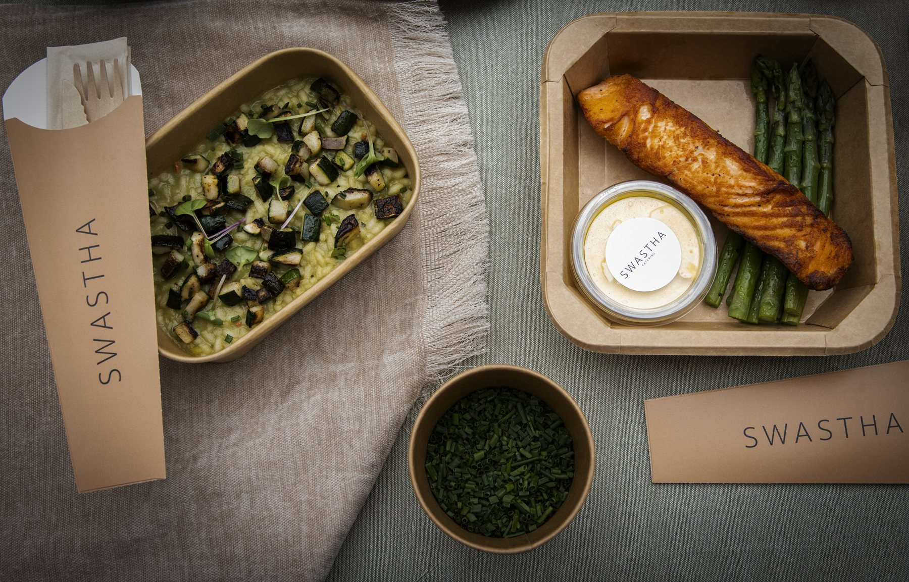

For a large part of the year, some of the people in any Serbian office are fasting, and most lunch orders are not ready for it. The person who is keeping the fast ends up with a side salad, a plate of beans or whatever is left once the meat has been picked out. Yet posni food is one of the oldest and richest parts of the local table, and it suits a healthy way of eating better than almost anything else. Posni catering works when it is planned as a proper menu from the start, not as a substitute for the real one.
What Posni Food Actually Excludes
Orthodox fasting food leaves out meat, dairy and eggs. That also means anything made with them, which is where menus tend to slip: butter in a risotto, cream in a soup, egg in fresh pasta, meat stock in a vegetable stew, yoghurt in a dressing. A dish can look completely vegetable based and still not be posni. The Serbian Orthodox calendar also sets several long fasts during the year, along with most Wednesdays and Fridays. The next long one is the Nativity Fast, from November 28 to January 6.
On Water, on Oil, and on Fish
Fasting has degrees, and that matters for a menu. On the strictest days, food is prepared on water, without oil. Other days allow oil, and on some days fish is permitted as well. The exact days depend on the fast and the calendar, and people keep them with different degrees of strictness. A caterer should not decide this for your guests. If it matters for your event, ask whoever is hosting, or your priest in the case of a slava, then tell the caterer which of the three you need. In practice, most company lunches and events are served on oil, with fish where the day allows it.
Posni and Vegan Are Close, but Not the Same
The two overlap so much that most vegan dishes also work on an oil day. The differences show up at the edges. Fish is posni on some days and never vegan. Honey is generally accepted in fasting food and avoided by most vegans. A vegan dish cooked with oil is still not right for a day on water. The practical result is good news for whoever is ordering: one well planned plant based line can cover fasting colleagues, vegans and many people who avoid dairy, all at once. Our guide to vegetarian and vegan menus covers that side in more detail.
What a Good Posni Menu Looks Like
A filling posni meal needs protein and fat, not only vegetables, or people will be hungry by three o'clock. That means lentils, beans, chickpeas, walnuts, tahini and good oil, alongside whole grains. In autumn and winter, the classics are already on your side: prebranac, posna sarma, stuffed peppers with rice and walnuts, baked peppers, mushroom stews, and thick soups of pumpkin, lentil or roasted vegetables finished with pumpkin seeds. On fish days, baked trout, hake or salmon turn a lunch into something properly festive. Good bread, pickles and ajvar do the rest.

"If the fasting option is the one everybody else wants to taste, the menu was planned properly."
Feeding a Mixed Office During the Fast
In most offices only part of the team fasts, and that part changes with the calendar. Do not choose between one menu for everyone and a sad exception. Agree on a posni option as a fixed part of the daily order during fasting periods, with people choosing it the same way they choose anything else. If you collect orders the day before, the kitchen knows the exact number. Pack and label those meals separately, so nobody needs to ask what is in them. On our daily employee meals format, this is one line on a headcount, not a special request.
Posni Catering for a Slava or Company Event
When the whole table is posni, the rule changes: nobody is an exception, so the menu has to feel generous on its own terms. That means several dishes rather than one large one, warm food as well as cold, and something special to anchor the table. Nikoljdan on December 19 falls within the Nativity Fast and is traditionally a fish table. Read more about planning it in our guide to catering for a company slava.
What to Ask a Caterer
Three questions tell you most of what you need to know. Is the food cooked for fasting, or only without visible meat? That is the question that catches stock, butter and cream. Do you cook on oil and on water, and can you confirm which is which? How are posni meals kept separate from the others during cooking, packing and serving? Anyone with a serious answer to those three will handle the rest. For a broader checklist, see our guide to choosing a catering partner.
The Bottom Line
Posni catering is not a compromise, it is a menu with clear rules. Get the rules right, build the meal around real protein and warm dishes, and label it honestly. Tell us how many people are fasting, on what days and for which occasion, and we will reply within 24 hours with a menu and a proposal.